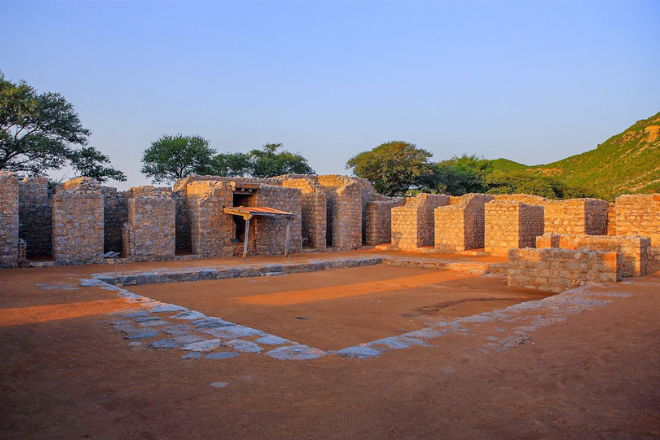
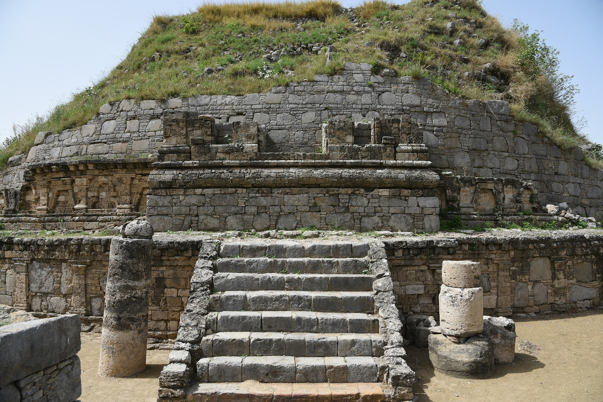
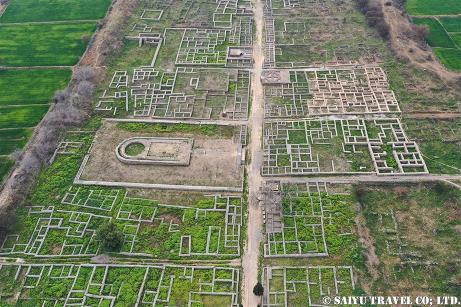

Five Millennia
of Monuments
From the world's oldest planned cities to the Mughal Empire's greatest masterpieces — every major historical site in Pakistan, researched in depth and ready to explore.



Taxila
Punjab · Buddhist Civilisation · 600 BCE – 500 CE
Taxila was one of the ancient world's foremost centres of learning — a Buddhist Oxford where students from across Asia came to study astronomy, medicine, philosophy and the Vedas. Alexander the Great passed through it in 326 BCE and found a city already ancient. The ruins now span three major excavated cities: Bhir Mound, Sirkap, and Sirsukh, plus a constellation of stupas and monasteries.
The Dharmarajika Stupa, built by the Mauryan Emperor Ashoka in the 3rd century BCE, is one of the oldest in the world. Jaulian Monastery preserves some of the most complete Gandharan stucco sculpture in existence. The Taxila Museum holds the finest collection of Gandhara art on Earth.
Visitor Information
Mohenjo-daro
Sindh · Indus Valley Civilisation · 2500 – 1700 BCE
Built in approximately 2500 BCE, Mohenjo-daro — "Mound of the Dead" — was one of the largest cities of the ancient Indus Valley Civilisation and one of the world's earliest major urban settlements. At its height, it may have had a population of 40,000 people.
What staggers archaeologists is the sophistication: grid-planned streets, standardised baked bricks, a centralised granary, and a Great Bath that functioned as a public ritual space. The drainage system was more advanced than anything in contemporary Mesopotamia or Egypt. Yet we still cannot read their writing system.
Visitor Information
Lahore Fort
Punjab · Mughal Empire · 1566 CE (Current Structure)
The Lahore Fort — Shahi Qila — embodies four centuries of Mughal ambition. Every emperor from Akbar to Aurangzeb added to it, each leaving a distinctly personal architectural statement. The result is a 20-hectare complex of 21 notable monuments including the Sheesh Mahal (Palace of Mirrors), the Naulakha Pavilion, and the Alamgiri Gate.
Listed alongside the Shalimar Gardens, the Fort represents the apex of Mughal landscape and architectural design. The nearby Walled City of Lahore — with its Wazir Khan Mosque, Delhi Gate, and Heera Mandi — extends the experience across an entire living medieval city.
Visitor Information


Takht-i-Bahi
KPK · Gandhara Buddhist · 1st – 7th Century CE
Perched dramatically on a hilltop in Mardan District, Takht-i-Bahi is the best-preserved Buddhist monastery complex in Pakistan. Built during the Parthian period and expanded continuously over five centuries, it was never buried — its elevation kept it safe from floods and excavation alike.
The complex includes a Court of Stupas, a Monastic Court, an Assembly Hall, and a Tantric Court. The site's intact state is rare for this age — walking through it you understand precisely how Buddhist monks organised their lives 1,500 years ago.
Visitor Information

Rohtas Fort
Punjab · Suri Dynasty · 1541 CE
Built by the Afghan ruler Sher Shah Suri in 1541 CE to suppress the Potohar Plateau tribes and block the return of the Mughal Emperor Humayun, Rohtas Fort was never conquered. Its walls stretch over 4 kilometres, punctuated by 68 semi-circular bastions and 12 gates, making it one of the finest examples of early Muslim military architecture in the subcontinent.
UNESCO notes the fort's outstanding significance as an early Muslim adaptation of pre-Mughal Hindu architectural traditions — a fusion rarely seen so completely preserved. The Shahi Mosque inside the fort is a masterpiece of Suri-era craft.
Visitor Information
Makli Necropolis
Sindh · Samma–Talpur Dynasties · 14th–18th Century CE
Makli Hill near Thatta contains one of the world's largest necropolises — an estimated 500,000 to 1,000,000 graves spread across 10 square kilometres. The tombs of kings, queens, saints, soldiers, and scholars from five centuries of Sindhi dynastic power are gathered here.
The funerary architecture is extraordinary: intricate blue tile mosaic, carved sandstone filigree, geometric calligraphy, and towering mausoleums that drew on Persian, Central Asian, and local Sindhi traditions. The Tomb of Isa Khan Tarkhan II is considered the pinnacle of this tradition.
Visitor Information
Complete Reference
All Major Sites
at a Glance
| Site | Province | Era | Period | Status |
|---|---|---|---|---|
| Taxila | Punjab | Gandhara Buddhist | 600 BCE – 500 CE | UNESCO |
| Mohenjo-daro | Sindh | Indus Valley | 2500 BCE | UNESCO |
| Lahore Fort & Shalimar | Punjab | Mughal | 1566 CE | UNESCO |
| Rohtas Fort | Punjab | Suri Dynasty | 1541 CE | UNESCO |
| Makli Necropolis | Sindh | Medieval Islamic | 14th–18th CE | UNESCO |
| Takht-i-Bahi | KPK | Gandhara Buddhist | 1st–7th CE | UNESCO |
| Harappa | Punjab | Indus Valley | 2600 BCE | Provincial |
| Mehrgarh | Balochistan | Neolithic | 7000 BCE | National |
| Badshahi Mosque | Punjab | Mughal | 1673 CE | Protected |
| Ranikot Fort | Sindh | Medieval | 9th CE | National |
| Derawar Fort | Punjab | Abbasi | 9th CE | Provincial |
| Baltit Fort | Gilgit-Baltistan | Silk Road | 700–1100 CE | Protected |
| Altit Fort | Gilgit-Baltistan | Ancient | Pre-900 CE | Protected |
| Peshawar Museum | KPK | Colonial | 1906 CE | National |
| Wazir Khan Mosque | Punjab | Mughal | 1635 CE | Protected |